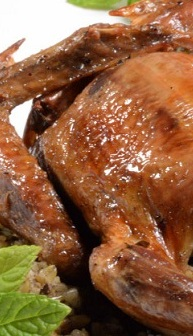
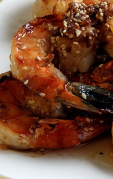
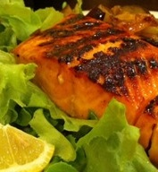

يعد الحمام واحدًا من الطيور ذات اللحوم الشهية التى يتم تناولها وتقديمها كطبق رئيسى على الموائد المصرية والعربية، وهو من الأكلات المغذية أيضًا والتى يتم تقديمها بأكثر من طريقة وأكثر من حشوة، فتعرفى على طريقة عمل الحمام بأكثر من أسلوب مختلف بين المحشو بالأرز والمشوى....
لمعرفة المزيد عن الوصفات
الحمام المحشي
عيفضل الكثير من الأشخاص تناول قطع الجمبرى لطعمه المميز وسهولة طهيه، ولتوفير تكاليف شراء وجبة الجمبرى المشوى من المطعم نتعرف فى السطور القادمة على طريقة عمل الجمبرى المشوى، بخطوات بسيطة، وفقاً لما ذكره موقع "allrecipes"...
مكوناتة
- 1 حبة كبيرة من الثوم.
- 1 ملعقة كبيرة ملح خشن.
- 1/2 ملعقة صغيرة فلفل حريف.
- 1 ملعقة صغيرة من الفلفل الحلو.
- 2 ملعقة كبيرة من زيت الزيتون.
- 2 ملعقة صغيرة من عصير الليمون.
- 2 رطل كبير من الروبيان....
معرفة المزيد عن الوصفة
الجمبرى المشوى الحار
تتعدد طرق تحضير الأسماك وتظهر كل يوم طريقة جديدة وتوابل مختلفة لتجديد مذاق السمك حتى يتناوله الجميع بمذاق فريد من نوعه، ويستفاد من فوائده المتعددة، وتقدم الشيف إلهام محمد طريقة عمل فيليه السمك المشوى بالتوابل الحارة الجديدة....
لمعرفة المزيد من الوصفة
السمك المشوى بالتوابل الحارة
-

-

-
